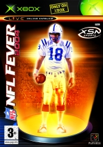

NFL Fever features advanced artificial intelligence including significant offensive and defensive adjustments, animated NFL coaches roaming the sidelines offering situational analysis, a brand-new offensive playbook, totally reworked stadium models and advanced passing. From traditional, single and multiplayer gaming to league and tournament play on Xbox Live.
-
DetailsPublisher : Microsoft Game Studios
Developer : Microsoft Game Studios
Release Date : Available Now
Price: £39.99
Purchase
- Screenshots

- Features
-
Gameplay - Winning the battle is about dominating on the defensive side of the ball. There are on-the-fly defensive adjustments and adaptive defensive players geared up to take away the deep pass. To mount a formidable offensive campaign, you will need serious passing skills and the ability to dominate the line of scrimmage.
Coach - For those who want more strategy on a championship run, there is the coach on the sidelines and you should be on the lookout for situational advice from them. Coaches will analyse the game and provide insight that can make all the difference.
NFL - All the action of real life NFL American Football with tight and responsive controls to better deliver the intense, action-packed pace of a real game. Kevin Calabro and Ron Pitts help deliver all the hard-hitting action with informative play-by-play and analysis.
Xbox Live - Xbox Live offers american football fans across the world the ultimate gridiron challenge. Providing downloadable content, roster updates, updated player ratings, tournaments and an all-new "cheater beater," destroying the hopes of less-honest opponents.

{kind=link}
{kind=link}
{kind=link}